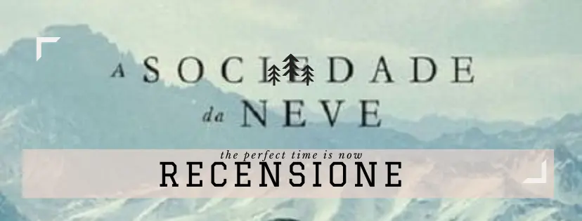
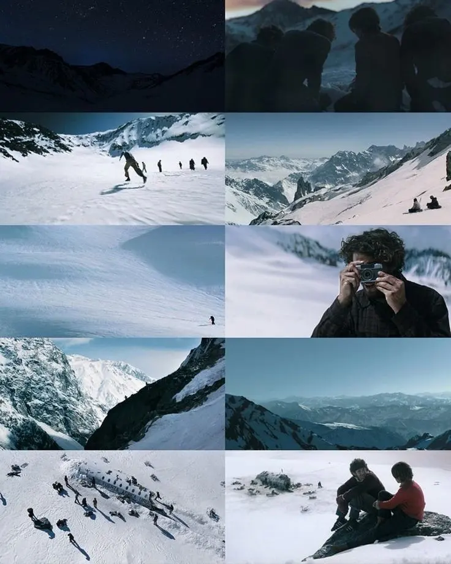
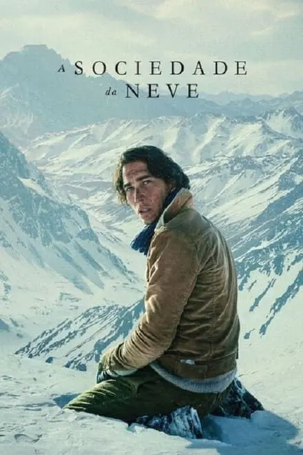

RECENSIONE: film "la società della neve" Netflix

Un paio di sere fa ho visto il film 'la società della neve' su Netflix.
L'ho guardato per la curiosità che mi hanno trasmesso le mille recensioni, la trama e il trailer.

"La società della neve" è un film che narra una storia straordinaria di sopravvivenza in condizioni estreme.
Basato sulle testimonianze dei 16 sopravvissuti al disastro aereo delle Ande avvenuto nel 1972,
il film offre una visione intima e coinvolgente di ciò che hanno vissuto e sperimentato in quelle circostanze difficili.
La trama segue la tragedia del volo 571, che si schianta sulle montagne andine causando la morte di molti passeggeri.
I sopravvissuti devono affrontare innumerevoli sfide: il freddo, la fame, il dolore fisico e la disperazione.
Il regista riesce a catturare l'essenza di questa storia straordinaria attraverso una fotografia suggestiva e una narrazione coinvolgente.
Gli attori, con le loro interpretazioni intense e realistiche, trasmettono al pubblico le emozioni e le sfide che i sopravvissuti hanno affrontato.
"La società della neve" è uno di quei film che ti cattura fin dal primo istante e ti trasporta in un viaggio emotivo senza precedenti.
La sua capacità di mettere in evidenza la resilienza umana e la forza dello spirito umano è veramente sorprendente.
È un film che offre una riflessione profonda sulla nostra capacità di superare le avversità e di trovare la speranza anche nelle situazioni più disperate.
RIFLESSIONI:
Dopo avere letto sulla storia reale, ho scoperto delle circostanze che avrebbero potuto cambiare la sorte dei sopravvissuti.
La possibilità di trovare un hotel abbandonato e l'opzione di avventurarsi oltre la montagna prima avrebbero fornito un ambiente più confortevole e protetto.
Queste scoperte mi hanno fatto riflettere sulle diverse possibilità che avrebbero potuto essere prese in considerazione per migliorare le condizioni dei sopravvissuti e forse ottenere una salvezza più tempestiva.
Mi aspettavo un racconto diverso rispetto al film precedente e questo ha creato delle differenze di aspettative.
È importante ricordare che ogni opera cinematografica ha il suo punto di vista e può aver subito modifiche rispetto alla storia reale.
CONCLUSIONI:
Nonostante queste considerazioni, "La società della neve" offre comunque una rappresentazione coinvolgente e intensa della storia dei sopravvissuti, mettendo in risalto le qualità umane necessarie per affrontare le situazioni estreme.
Nonostante la sua crudeltà, il film invita a riflettere sulle sfide che affrontano le persone in circostanze così difficili e sulla straordinaria forza di volontà necessaria per sopravvivere.
MA..HO NOTATO..
Un altro aspetto che ho notato, e che forse nessun altro ha notato, è che sembra poco realistico il fatto che in quasi tre mesi i sopravvissuti non abbiano neanche un minimo di crescita dei capelli e della barba.
Inoltre, nonostante la mancanza di cibo, le sigarette sembrano essere sempre presenti.
Questi dettagli mi hanno lasciato perplesso e non mi hanno convinto del tutto.

Tuttavia, devo dire che sono rimasto molto soddisfatto dall'interpretazione degli attori.
Tutti hanno offerto ottime performance, dimostrando di essere molto bravi nel dare vita ai personaggi e trasmettere le emozioni necessarie per la storia.
Penso che ciò abbia contribuito a rendere il film più coinvolgente e interessante.
Voi l'avete già visto il film?
Cosa ne pensate?